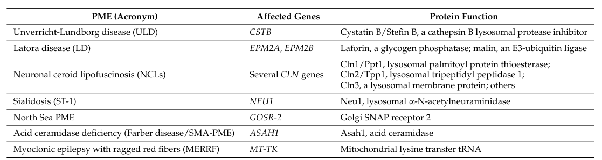

Progressive myoclonus epilepsy (PME) is a clinically and genetically heterogeneous group of rare disorders unified by a core triad of action myoclonus, tonic-clonic (and other) seizures, and progressive neurological deterioration including cerebellar ataxia and cognitive decline. The classic genetic causes include Unverricht-Lundborg disease (EPM1, CSTB), Lafora disease (EPM2A/NHLRC1), myoclonic epilepsy with ragged-red fibers (MERRF, mitochondrial tRNA-Lys), the neuronal ceroid lipofuscinoses, and sialidosis type 1 (cherry-red spot myoclonus syndrome, NEU1). Despite divergent primary defects (loss of a cysteine-protease inhibitor, defective glycogen handling, mitochondrial translation failure, lysosomal storage), these disorders converge on cortical and cerebellar neuronal dysfunction that produces cortical (reflex) myoclonus and progressive degeneration. This entry is the ROOT grouping for the progressive myoclonus epilepsies; specific subtypes curated elsewhere include Lafora_Disease.yaml, Neuronal_Ceroid_Lipofuscinosis.yaml, and Sialidosis_Type_1.yaml.
Ask a research question about Progressive Myoclonus Epilepsy. OpenScientist will conduct autonomous deep research using the Disorder Mechanisms Knowledge Base and PubMed literature (typically 10-30 minutes).
Do not include personal health information in your question. Questions and results are cached in your browser's local storage.
name: Progressive Myoclonus Epilepsy
creation_date: "2026-06-08T18:24:00Z"
description: >
Progressive myoclonus epilepsy (PME) is a clinically and genetically
heterogeneous group of rare disorders unified by a core triad of action
myoclonus, tonic-clonic (and other) seizures, and progressive neurological
deterioration including cerebellar ataxia and cognitive decline. The classic
genetic causes include Unverricht-Lundborg disease (EPM1, CSTB), Lafora
disease (EPM2A/NHLRC1), myoclonic epilepsy with ragged-red fibers (MERRF,
mitochondrial tRNA-Lys), the neuronal ceroid lipofuscinoses, and sialidosis
type 1 (cherry-red spot myoclonus syndrome, NEU1). Despite divergent primary
defects (loss of a cysteine-protease inhibitor, defective glycogen handling,
mitochondrial translation failure, lysosomal storage), these disorders
converge on cortical and cerebellar neuronal dysfunction that produces
cortical (reflex) myoclonus and progressive degeneration. This entry is the
ROOT grouping for the progressive myoclonus epilepsies; specific subtypes
curated elsewhere include Lafora_Disease.yaml, Neuronal_Ceroid_Lipofuscinosis.yaml,
and Sialidosis_Type_1.yaml.
category: Genetic
disease_term:
preferred_term: progressive myoclonus epilepsy
term:
id: MONDO:0020074
label: progressive myoclonus epilepsy
synonyms:
- PME
- progressive myoclonic epilepsy
- familial progressive myoclonic epilepsy
parents:
- Epilepsy
- Neurodegenerative Disease
references:
- reference: PMID:15778103
title: "Progressive myoclonic epilepsies: a review of genetic and therapeutic aspects."
findings: []
has_subtypes:
- name: EPM1
display_name: Unverricht-Lundborg Disease (EPM1, CSTB)
description: >
The most common PME, caused by biallelic CSTB (cystatin B) variants,
usually an unstable dodecamer repeat expansion in the promoter. Onset
in late childhood/adolescence with stimulus-sensitive action myoclonus
and tonic-clonic seizures; relatively slow progression with comparatively
preserved cognition versus Lafora disease.
- name: EPM2
display_name: Lafora Disease (EPM2A/NHLRC1)
description: >
A severe, fatal teenage-onset PME caused by biallelic variants in EPM2A
(laforin glycogen phosphatase) or NHLRC1/EPM2B (malin E3 ubiquitin
ligase), producing intracellular polyglucosan inclusions (Lafora bodies)
and rapidly progressive myoclonus, seizures, and dementia. Curated in
detail in Lafora_Disease.yaml.
- name: MERRF
display_name: Myoclonic Epilepsy with Ragged-Red Fibers (mtDNA)
description: >
A maternally inherited mitochondrial PME most often caused by the
m.8344A>G variant in the mitochondrial tRNA-Lys gene (MT-TK), impairing
mitochondrial protein synthesis and oxidative phosphorylation. Features
myoclonus, epilepsy, ataxia, and ragged-red fibers on muscle biopsy.
- name: NCL
display_name: Neuronal Ceroid Lipofuscinosis
description: >
A group of lysosomal storage disorders (CLN1-CLN14) with accumulation of
autofluorescent ceroid lipopigment, presenting with myoclonus, seizures,
progressive visual loss, and cognitive/motor decline. Curated in detail
in Neuronal_Ceroid_Lipofuscinosis.yaml and related NCL entries.
- name: Sialidosis Type 1
display_name: Sialidosis Type 1 (Cherry-Red Spot Myoclonus, NEU1)
description: >
The type I (normomorphic) form of sialidosis caused by biallelic NEU1
(alpha-N-acetyl neuraminidase 1) deficiency, presenting as cherry-red
spot myoclonus syndrome with action myoclonus, seizures, and visual
failure. Curated in detail in Sialidosis_Type_1.yaml.
pathophysiology:
- name: Cortical Reflex Myoclonus and Progressive Neurodegeneration
description: >
The progressive myoclonic epilepsies are a group of symptomatic generalized
epilepsies caused by rare, mostly genetic disorders with a debilitating
course and poor outcome. Across etiologies the shared output is cortical
(reflex) myoclonus arising from sensorimotor cortical hyperexcitability,
superimposed on progressive degeneration of cortical and cerebellar
neurons that drives worsening seizures, ataxia, and cognitive decline.
cell_types:
- preferred_term: neuron
term:
id: CL:0000540
label: neuron
- preferred_term: Purkinje cell
term:
id: CL:0000121
label: Purkinje cell
biological_processes:
- preferred_term: neuron apoptotic process
modifier: INCREASED
term:
id: GO:0051402
label: neuron apoptotic process
evidence:
- reference: PMID:15778103
supports: SUPPORT
evidence_source: HUMAN_CLINICAL
snippet: "The progressive myoclonic epilepsies (PMEs) are a group of symptomatic generalised epilepsies caused by rare disorders, most of which have a genetic component, a debilitating course, and a poor outcome."
explanation: >
This grouping-level review establishes PME as a heterogeneous group of
symptomatic generalized epilepsies with shared debilitating, progressive
course, supporting the root-level characterization of this entry.
- name: Cystatin B Loss (EPM1 / Unverricht-Lundborg)
description: >
In Unverricht-Lundborg disease (EPM1; subtype EPM1 in this entry),
loss-of-function reduction of cystatin B - an inhibitor of lysosomal
cysteine proteases (cathepsins) - causes progressive myoclonus epilepsy.
Decreased cystatin B is thought to permit unrestrained cysteine-protease
activity, with downstream neuronal apoptosis (notably of cerebellar granule
and Purkinje cells in model organisms) underlying the action myoclonus and
ataxia.
cell_types:
- preferred_term: neuron
term:
id: CL:0000540
label: neuron
biological_processes:
- preferred_term: cysteine protease (cathepsin) inhibition by cystatin B
modifier: DECREASED
term:
id: GO:0045861
label: negative regulation of proteolysis
evidence:
- reference: PMID:8596935
supports: SUPPORT
evidence_source: HUMAN_CLINICAL
snippet: "These results provide evidence that mutations in the gene encoding cystatin B are responsible for the primary defect in patients with EPM1."
explanation: >
The original gene-discovery paper establishes loss-of-function cystatin B
mutations as the primary defect in EPM1 / Unverricht-Lundborg type PME.
- name: Defective Glycogen Handling and Lafora Body Formation (EPM2)
description: >
In Lafora disease (subtype EPM2 in this entry), loss of the laforin glycogen
phosphatase (EPM2A) or the malin E3 ubiquitin ligase (NHLRC1/EPM2B) produces
poorly branched, hyperphosphorylated glycogen that precipitates and
aggregates into intracellular Lafora bodies. These polyglucosan inclusions
are a principal driver of neurodegeneration and the rapidly progressive
myoclonus, seizures, and dementia of this PME subtype.
cell_types:
- preferred_term: neuron
term:
id: CL:0000540
label: neuron
biological_processes:
- preferred_term: glycogen metabolic process
modifier: DYSREGULATED
term:
id: GO:0005977
label: glycogen metabolic process
evidence:
- reference: PMID:30143794
supports: SUPPORT
evidence_source: HUMAN_CLINICAL
snippet: "The absence of either protein results in poorly branched, hyperphosphorylated glycogen, which precipitates, aggregates and accumulates into Lafora bodies."
explanation: >
This review describes the laforin-malin glycogen-handling defect and
Lafora body formation that define the EPM2 mechanism of PME.
- reference: PMID:20538597
supports: SUPPORT
evidence_source: MODEL_ORGANISM
snippet: "Approximately 90% of cases of Lafora disease, a fatal teenage-onset progressive myoclonus epilepsy, are caused by mutations in either the EPM2A or the EPM2B genes that encode, respectively, a glycogen phosphatase called laforin and an E3 ubiquitin ligase called malin."
explanation: >
Establishes EPM2A/EPM2B as the genetic basis of Lafora disease in a
malin-knockout mouse study that recapitulates Lafora body formation.
- name: Mitochondrial Translation Failure (MERRF)
description: >
In MERRF (subtype MERRF in this entry), the m.8344A>G variant of the
mitochondrial tRNA-Lys gene impairs mitochondrial protein synthesis and
oxidative phosphorylation, producing a maternally transmitted mitochondrial
encephalomyopathy with myoclonus, epilepsy, ataxia, and ragged-red fibers.
Heteroplasmic energy failure in neurons and muscle underlies the PME
phenotype in this subtype.
cell_types:
- preferred_term: neuron
term:
id: CL:0000540
label: neuron
biological_processes:
- preferred_term: mitochondrial translation
modifier: DECREASED
term:
id: GO:0032543
label: mitochondrial translation
- preferred_term: oxidative phosphorylation
modifier: DECREASED
term:
id: GO:0006119
label: oxidative phosphorylation
evidence:
- reference: PMID:1899320
supports: SUPPORT
evidence_source: HUMAN_CLINICAL
snippet: "Our study corroborates the idea that the A----G(8344) mutation is the most frequent and widespread genetic cause of MERRF."
explanation: >
Confirms the mitochondrial tRNA-Lys m.8344A>G variant as the most common
genetic cause of MERRF, the mitochondrial PME subtype.
- name: Lysosomal Storage (NCL and Sialidosis)
description: >
Two PME subtypes are lysosomal storage disorders. In the neuronal ceroid
lipofuscinoses (subtype NCL), genetically heterogeneous lysosomal defects
cause toxic endo-lysosomal accumulation of autofluorescent ceroid
lipopigment. In sialidosis type 1 (subtype Sialidosis Type 1), deficiency of
NEU1 (alpha-N-acetyl neuraminidase 1) impairs catabolism of sialylated
glycoconjugates, causing storage and the cherry-red spot myoclonus
phenotype. Both converge on neuronal storage, autophagic-lysosomal
dysfunction, and progressive degeneration with myoclonus and seizures.
cell_types:
- preferred_term: neuron
term:
id: CL:0000540
label: neuron
biological_processes:
- preferred_term: lysosomal transport
modifier: DYSREGULATED
term:
id: GO:0007041
label: lysosomal transport
- preferred_term: glycoprotein catabolic process
modifier: DECREASED
term:
id: GO:0006516
label: glycoprotein catabolic process
evidence:
- reference: PMID:35359645
supports: SUPPORT
evidence_source: HUMAN_CLINICAL
snippet: "These are genetic diseases associated with the formation of toxic endo-lysosomal storage."
explanation: >
This NCL overview identifies toxic endo-lysosomal storage as the core
lysosomal mechanism of the NCL group of PMEs.
- reference: PMID:30635863
supports: SUPPORT
evidence_source: HUMAN_CLINICAL
snippet: "Type 1 sialidosis (OMIM#256550) is a rare autosomal recessive lysosomal storage disease caused by a mutation in the NEU1 (OMIM * 608272) gene."
explanation: >
Establishes sialidosis type 1 as a NEU1-deficient lysosomal storage
disease, the second lysosomal PME subtype.
phenotypes:
- category: Neurological
name: Action Myoclonus
description: >
Stimulus-sensitive, action-activated cortical myoclonus is the defining
feature shared across PME subtypes.
phenotype_term:
preferred_term: Action myoclonus
term:
id: HP:0034360
label: Action myoclonus
evidence:
- reference: PMID:30635863
supports: SUPPORT
evidence_source: HUMAN_CLINICAL
snippet: "Cherry-red spot, myoclonus, ataxia, and seizure were reported in 51.2%, 100.0%, 87.8%, and 73.7% of patients, respectively."
explanation: >
In a literature review of genetically confirmed type 1 sialidosis (a PME
subtype), myoclonus was present in 100% of patients, supporting myoclonus
as the cardinal PME phenotype.
- category: Neurological
name: Myoclonus
description: >
Myoclonic jerks, often multifocal and worsening over the disease course,
are a near-universal PME feature.
phenotype_term:
preferred_term: Myoclonus
term:
id: HP:0001336
label: Myoclonus
evidence:
- reference: PMID:30143794
supports: SUPPORT
evidence_source: HUMAN_CLINICAL
snippet: "Lafora disease is a severe, autosomal recessive, progressive myoclonus epilepsy."
explanation: >
Lafora disease, a representative PME subtype, is defined as a progressive
myoclonus epilepsy, supporting myoclonus as a core grouping phenotype.
- category: Neurological
name: Generalized Tonic-Clonic Seizures
description: >
Generalized (bilateral) tonic-clonic seizures occur across PME subtypes
and worsen with disease progression.
phenotype_term:
preferred_term: Generalized tonic-clonic seizures
term:
id: HP:0002069
label: Bilateral tonic-clonic seizure
evidence:
- reference: PMID:30635863
supports: SUPPORT
evidence_source: HUMAN_CLINICAL
snippet: "Cherry-red spot, myoclonus, ataxia, and seizure were reported in 51.2%, 100.0%, 87.8%, and 73.7% of patients, respectively."
explanation: >
Seizures were reported in 73.7% of genetically confirmed type 1 sialidosis
patients, supporting seizures as a frequent PME phenotype.
- category: Neurological
name: Progressive Cerebellar Ataxia
description: >
Progressive cerebellar ataxia accompanies the myoclonus and seizures and
contributes to motor disability across PME subtypes.
phenotype_term:
preferred_term: Progressive cerebellar ataxia
term:
id: HP:0002073
label: Progressive cerebellar ataxia
clinical_course: PROGRESSIVE
evidence:
- reference: PMID:30635863
supports: SUPPORT
evidence_source: HUMAN_CLINICAL
snippet: "Cherry-red spot, myoclonus, ataxia, and seizure were reported in 51.2%, 100.0%, 87.8%, and 73.7% of patients, respectively."
explanation: >
Ataxia was reported in 87.8% of type 1 sialidosis patients, supporting
progressive ataxia as a frequent PME phenotype.
- category: Neurological
name: Progressive Neurological Deterioration
description: >
Progressive cognitive decline and overall neurological deterioration are
defining of the "progressive" character of PME, ranging from relatively
preserved cognition (Unverricht-Lundborg) to rapid dementia (Lafora).
phenotype_term:
preferred_term: Progressive neurologic deterioration
term:
id: HP:0002344
label: Progressive neurologic deterioration
clinical_course: PROGRESSIVE
evidence:
- reference: PMID:30143794
supports: SUPPORT
evidence_source: HUMAN_CLINICAL
snippet: "The disease usually manifests in previously healthy adolescents, and death commonly occurs within 10 years of symptom onset."
explanation: >
Lafora disease illustrates the progressive, fatal neurological
deterioration that characterizes the PME grouping.
- category: Neurological
name: Progressive Visual Loss
description: >
Progressive visual loss is prominent in the lysosomal PME subtypes,
including the neuronal ceroid lipofuscinoses and sialidosis (cherry-red
spot of the macula).
phenotype_term:
preferred_term: Progressive visual loss
term:
id: HP:0000529
label: Progressive visual loss
clinical_course: PROGRESSIVE
evidence:
- reference: PMID:30635863
supports: SUPPORT
evidence_source: HUMAN_CLINICAL
snippet: "Our study suggests the importance of ophthalmologic examinations in patients with myoclonus, ataxia, and seizure who do not complain of visual symptoms."
explanation: >
The sialidosis type 1 review emphasizes ophthalmologic findings (cherry-red
spot) in PME patients, supporting visual involvement in lysosomal PME subtypes.
genetic:
- name: CSTB
association: Causative
subtype: EPM1
notes: >
Biallelic loss-of-function variants in CSTB (cystatin B), most often an
unstable promoter dodecamer repeat expansion, cause EPM1 / Unverricht-
Lundborg disease, the most common PME.
gene_term:
preferred_term: CSTB
term:
id: hgnc:2482
label: CSTB
evidence:
- reference: PMID:8596935
supports: SUPPORT
evidence_source: HUMAN_CLINICAL
snippet: "Two mutations, a 3' splice site mutation and a stop codon mutation, were identified in the gene encoding cystatin B in EPM1 patients but were not present in unaffected individuals."
explanation: >
Identifies pathogenic CSTB mutations in EPM1 patients, establishing the
gene-disease relationship for Unverricht-Lundborg PME.
- name: EPM2A
association: Causative
subtype: EPM2
notes: >
Biallelic loss-of-function variants in EPM2A (laforin glycogen phosphatase)
cause Lafora disease, accounting for a large fraction of cases.
gene_term:
preferred_term: EPM2A
term:
id: hgnc:3413
label: EPM2A
evidence:
- reference: PMID:30143794
supports: SUPPORT
evidence_source: HUMAN_CLINICAL
snippet: "Lafora disease is caused by loss-of-function mutations in EPM2A or NHLRC1, which encode laforin and malin, respectively."
explanation: >
Establishes EPM2A as a causative gene for Lafora disease, an EPM2 PME subtype.
- name: NHLRC1
association: Causative
subtype: EPM2
notes: >
Biallelic loss-of-function variants in NHLRC1 (EPM2B; malin E3 ubiquitin
ligase) cause Lafora disease, accounting for most of the remaining cases.
gene_term:
preferred_term: NHLRC1
term:
id: hgnc:21576
label: NHLRC1
evidence:
- reference: PMID:30143794
supports: SUPPORT
evidence_source: HUMAN_CLINICAL
snippet: "Lafora disease is caused by loss-of-function mutations in EPM2A or NHLRC1, which encode laforin and malin, respectively."
explanation: >
Establishes NHLRC1 (EPM2B) as a causative gene for Lafora disease.
- name: NEU1
association: Causative
subtype: Sialidosis Type 1
notes: >
Biallelic loss-of-function variants in NEU1 (alpha-N-acetyl neuraminidase 1)
cause sialidosis type 1, the cherry-red spot myoclonus PME subtype.
gene_term:
preferred_term: NEU1
term:
id: hgnc:7758
label: NEU1
evidence:
- reference: PMID:30635863
supports: SUPPORT
evidence_source: HUMAN_CLINICAL
snippet: "Type 1 sialidosis (OMIM#256550) is a rare autosomal recessive lysosomal storage disease caused by a mutation in the NEU1 (OMIM * 608272) gene."
explanation: >
Establishes NEU1 as the causative gene for sialidosis type 1, a lysosomal PME subtype.
notes: >
This is the root grouping entry for the progressive myoclonus epilepsies. MERRF
(mitochondrial tRNA-Lys, m.8344A>G) is described in the genetic and
pathophysiology prose but is not represented in the `genetic:` gene list because
its causal locus is a mitochondrial tRNA gene (MT-TK) rather than a nuclear HGNC
gene with a standard term binding. Dentatorubral-pallidoluysian atrophy (DRPLA)
and Gaucher disease type 3 can also present with a PME phenotype and are curated
in their own entries; additional rarer PME genes (e.g., GOSR2, KCNC1, SCARB2,
PRICKLE1, CARS2, SEMA6B) are intentionally out of scope for this root grouping.
Question: You are an expert researcher providing comprehensive, well-cited information.
Provide detailed information focusing on: 1. Key concepts and definitions with current understanding 2. Recent developments and latest research (prioritize 2023-2024 sources) 3. Current applications and real-world implementations 4. Expert opinions and analysis from authoritative sources 5. Relevant statistics and data from recent studies
Format as a comprehensive research report with proper citations. Include URLs and publication dates where available. Always prioritize recent, authoritative sources and provide specific citations for all major claims.
Please provide a comprehensive research report on Progressive Myoclonus Epilepsy covering all of the disease characteristics listed below. This report will be used to populate a disease knowledge base entry. Be thorough and cite primary literature (PMID preferred) for all claims.
For each section, suggested databases/resources are listed. These are the first places you should search for information on each topic.
Search first: OMIM, Orphanet, ICD-10/ICD-11, MeSH, PubMed
Search first: PubMed, Cochrane Library, UpToDate, clinical guidelines, ClinVar, ClinGen, GWAS Catalog, PheGenI, CTD, CDC, WHO, epidemiological databases
Search first: PubMed, Cochrane Library, clinical trial databases, GWAS Catalog, gnomAD, WHO, CDC, nutrition databases
Search first: CTD, PubMed, PheGenI, GxE databases
Search first: HPO (Human Phenotype Ontology), OMIM, Orphanet, PubMed, clinicaltrials.gov, MedDRA, SNOMED CT, DECIPHER, LOINC
For each phenotype, provide: - Phenotype type: symptoms, clinical signs, physical manifestations, behavioral changes, or laboratory abnormalities
For symptoms/signs: HPO, OMIM, Orphanet, PubMed For behavioral changes: HPO, DSM, RDoC (Research Domain Criteria), PubMed For laboratory abnormalities: LOINC, SNOMED CT, LabTests Online, PubMed - Phenotype characteristics: Search first: OMIM, Orphanet, HPO, PubMed - Age of symptom onset (neonatal, childhood, adult-onset, late-onset) - Symptom severity (mild, moderate, severe, variable) - Symptom progression (stable, progressive, episodic, fluctuating) - Frequency among affected individuals (percentage or qualitative) - Quality of life impact: Effects on daily functioning and well-being (per-phenotype when possible) Search first: EQ-5D database, SF-36, WHO QOL databases, PubMed - Suggest HPO (Human Phenotype Ontology) terms for each phenotype
Search first: OMIM, ClinVar, HGMD, Ensembl, NCBI Gene
Search first: ENCODE, Roadmap Epigenomics, MethBase, DiseaseMeth
Search first: DECIPHER, ClinVar, ECARUCA, UCSC Genome Browser
Search first: CTD (Comparative Toxicogenomics Database), TOXNET, PubMed, EPA databases
Search first: CDC databases, WHO, PubMed, NHANES
Search first: NCBI Taxonomy, ViPR, BV-BRC, MicrobeDB, GIDEON
Search first: KEGG, Reactome, WikiPathways, PathBank, BioCyc
Search first: Gene Ontology (GO), Reactome, KEGG, PubMed
Search first: UniProt, PDB (Protein Data Bank), InterPro, Pfam, AlphaFold
Search first: KEGG, BioCyc, HMDB (Human Metabolome Database), BRENDA
Search first: ImmPort, Immunome Database, IEDB, Gene Ontology
Search first: PubMed, Gene Ontology, Reactome
Search first: BRENDA, UniProt, KEGG, OMIM, PubMed
Search first: ENCODE, Roadmap Epigenomics, MethBase, DiseaseMeth
For each mechanism, describe: - The causal chain from initial trigger to clinical manifestation - Which mechanisms are upstream vs downstream - What cell types and biological processes are involved - Suggest GO terms for biological processes and CL terms for cell types
Search first: Uberon, FMA (Foundational Model of Anatomy), OMIM, HPO, ICD-11, MeSH, SNOMED CT
Search first: Uberon, Human Protein Atlas, Cell Ontology, Human Cell Atlas, CellMarker, PanglaoDB
Search first: Gene Ontology (Cellular Component), UniProt, Human Protein Atlas
Search first: OMIM, Orphanet, HPO, PubMed
Search first: Disease registries, longitudinal cohort databases, natural history studies, PubMed, Orphanet, OMIM
Search first: Orphanet, CDC, WHO, GBD (Global Burden of Disease), national registries, SEER, disease registries
Search first: GTR (Genetic Testing Registry), GeneReviews, ClinGen
For each treatment, suggest MAXO (Medical Action Ontology) terms where applicable.
Search first: CDC vaccine schedules, WHO immunization, FDA vaccine database
Search first: CDC, WHO, behavioral intervention databases, Cochrane Library
Search first: NSGC resources, ACMG guidelines, GeneReviews
Search first: Clinical guidelines, FDA approvals, PubMed
Search first: NCBI Taxonomy
Search first: VBO (Vertebrate Breed Ontology)
Search first: NCBI Gene
Structure your response as a comprehensive narrative organized by the sections above. For each section, provide: - Factual content with specific details (numbers, percentages, gene names, variant nomenclature) - Ontology term suggestions (HPO, GO, CL, UBERON, CHEBI, MAXO, MONDO) where applicable - Evidence citations with PMIDs - Direct quotes from abstracts to support key claims - Clear indication when information is not available or not applicable for this disease
This report will be used to populate a disease knowledge base entry with: - Pathophysiology descriptions with causal chains - Gene/protein annotations (HGNC, GO terms) - Phenotype associations (HP terms) with frequencies - Cell type involvement (CL terms) - Anatomical locations (UBERON terms) - Chemical entities (CHEBI terms) - Treatment annotations (MAXO terms) - Evidence items with PMIDs and exact abstract quotes - Epidemiology, prognosis, diagnostic, and prevention information - Animal model descriptions with phenotype recapitulation details
Progressive myoclonus epilepsies (PMEs) are a heterogeneous group of (mostly genetic) neurologic disorders characterized by myoclonus plus seizures with progressive neurologic deterioration over variable timeframes. Core phenotypes across the group include action/stimulus-sensitive myoclonus, generalized seizures, ataxia/cerebellar signs, and (in many subtypes) cognitive decline or dementia. Major advances from 2023–2024 emphasize (i) increasing diagnostic yield via exome/genome sequencing, (ii) recognition of shared mechanisms such as neuroinflammation and lysosomal/autophagy dysfunction across multiple PMEs, and (iii) growing translational pipelines including enzyme replacement (already implemented for CLN2) and gene therapy programs for select subtypes. (zimmern2024progressivemyoclonusepilepsy pages 1-3, zimmern2024progressivemyoclonusepilepsy pages 3-4, zimmern2024progressivemyoclonusepilepsy pages 10-11)
PMEs are defined as a group of disorders featuring myoclonus and seizures that worsen progressively (variable tempo), with overlapping but subtype-specific phenotypes. A recent scoping review summarizes key shared manifestations including myoclonus, epilepsy, cerebellar involvement, and dementia, and emphasizes that the last decade has brought substantial progress in diagnosis and, for some disorders, therapy. (Zimmern & Minassian, Jan 2024, Genes, DOI: https://doi.org/10.3390/genes15020171) (zimmern2024progressivemyoclonusepilepsy pages 1-3)
A pragmatic clinical definition used in pediatric practice is that PME is an epilepsy syndrome characterized by myoclonus, cognitive deficit, and ataxia, illustrated by a pediatric cohort where EEG and MRI changes progress over time. (Fatema et al., Oct 2025, DOI: https://doi.org/10.3329/jbcps.v43i4.85002) (fatema2025phenotypeeegneuroimaging pages 1-2)
Umbrella-term identifiers were not reliably retrievable from the tool-accessible sources used in this run. PME is commonly operationalized via its major named genetic subtypes (e.g., EPM1/ULD, EPM2/Lafora, NCLs). For knowledge-base population, subtype-level identifiers are typically used (e.g., EPM1, EPM2; CLN2/TPP1). (zimmern2024progressivemyoclonusepilepsy pages 1-3, zimmern2024progressivemyoclonusepilepsy pages 10-11)
Common synonyms are largely subtype-based: - Unverricht–Lundborg disease (ULD) = progressive myoclonus epilepsy type 1 (EPM1) (CSTB). (singh2024therolesof pages 1-2, singh2024therolesof pages 2-4) - Lafora disease (LD) = progressive myoclonus epilepsy type 2 (EPM2) (EPM2A, NHLRC1/EPM2B). (burgos2023earlytreatmentwith pages 1-2, zimmern2024progressivemyoclonusepilepsy pages 6-7) - Neuronal ceroid lipofuscinoses (NCLs/Batten disease) often fall within the PME spectrum (multiple CLN genes). (zimmern2024progressivemyoclonusepilepsy pages 10-11, santucci2024glucosemetabolismimpairment pages 5-6)
The current understanding of PME is derived from both aggregated disease-level resources (reviews, cohorts, natural history studies) and individual patient series/case reports, with genetic confirmation increasingly central. (zimmern2024progressivemyoclonusepilepsy pages 1-3, cisse2024geneticprofileof pages 3-4, fatema2025phenotypeeegneuroimaging pages 2-5)
PME is primarily genetic and highly heterogeneous, with most classic PMEs being autosomal recessive, and a minority mitochondrial or autosomal dominant depending on subtype. (zimmern2024progressivemyoclonusepilepsy pages 1-3, cisse2024geneticprofileof pages 3-4)
Major causal genes/subtypes highlighted in recent synthesis include: - EPM1/ULD: CSTB (often promoter dodecamer repeat expansion causing reduced expression). (singh2024therolesof pages 2-4) - Lafora disease: EPM2A (laforin) and NHLRC1/EPM2B (malin). (burgos2023earlytreatmentwith pages 1-2, zimmern2024progressivemyoclonusepilepsy pages 6-7) - NCLs: multiple CLN genes (e.g., TPP1/CLN2, CLN6, MFSD8/CLN7, KCTD7/CLN14). (zimmern2024progressivemyoclonusepilepsy pages 10-11, santucci2024glucosemetabolismimpairment pages 5-6, fatema2025phenotypeeegneuroimaging pages 2-5) - Sialidosis type 1: NEU1. (zimmern2024progressivemyoclonusepilepsy pages 10-11, cisse2024geneticprofileof pages 3-4) - North Sea PME: GOSR2. (zimmern2024progressivemyoclonusepilepsy pages 10-11) - MERRF: typically MT-TK (mitochondrial). (zimmern2024progressivemyoclonusepilepsy pages 1-3)
A table-based gene mapping from the 2024 scoping review is available in the article’s Tables 1–2. (zimmern2024progressivemyoclonusepilepsy media 185b18d7, zimmern2024progressivemyoclonusepilepsy media 32f6541d, zimmern2024progressivemyoclonusepilepsy media 4fc29e96)
Genetic risk factors: biallelic pathogenic variants in subtype-specific genes are the principal risk factors. High parental consanguinity increases risk of autosomal recessive PME in some settings (e.g., 8/11 in a Bangladesh cohort). (fatema2025phenotypeeegneuroimaging pages 2-5)
Environmental risk factors: not established as primary causes for classic genetic PMEs in the provided sources.
No validated protective variants or clear gene–environment protective interactions were identified in the retrieved 2023–2024 PME-focused sources.
Across PMEs, hallmark phenotypes include: - Myoclonus (often action- or stimulus-sensitive; disabling; can cause falls). (holmes2020drugtreatmentof pages 4-6) - Generalized seizures (frequently generalized tonic–clonic; often drug-resistant in some subtypes). (zimmern2024progressivemyoclonusepilepsy pages 10-11, holmes2020drugtreatmentof pages 4-6) - Ataxia / cerebellar signs and dysarthria. (singh2024therolesof pages 1-2, fatema2025phenotypeeegneuroimaging pages 2-5) - Cognitive decline / neuroregression (variable by subtype). (holmes2020drugtreatmentof pages 4-6, fatema2025phenotypeeegneuroimaging pages 2-5) - Vision loss/ocular involvement is prominent in several NCLs and can also be a diagnostic clue in sialidosis. (zimmern2024progressivemyoclonusepilepsy pages 10-11, fatema2025phenotypeeegneuroimaging pages 2-5)
Action/stimulus-sensitive myoclonus is often described as severely disabling, interfering with daily activities and contributing to injuries. (holmes2020drugtreatmentof pages 4-6)
The retrieved sources emphasize genotype–phenotype relationships (e.g., specific NHLRC1 variants associated with milder or more severe Lafora course) but do not provide validated modifier gene catalogs across the PME umbrella term. (zimmern2024progressivemyoclonusepilepsy pages 6-7)
PMEs in the classic sense are predominantly genetic; environmental triggers can modulate seizure expression (e.g., sensory stimuli; photosensitivity) but are not primary etiologic factors in the retrieved evidence. (holmes2020drugtreatmentof pages 3-4, holmes2020drugtreatmentof pages 4-6)
Recent reviews emphasize convergence on neuroinflammation, lysosomal/autophagy dysfunction, and neuronal hyperexcitability across multiple PME subtypes (ULD, Lafora, NCLs). (zimmern2024progressivemyoclonusepilepsy pages 3-4, zimmern2024progressivemyoclonusepilepsy pages 10-11)
Causal chain (current model): CSTB deficiency → dysregulated protease inhibition and subcellular dysfunction (lysosome/mitochondria/nucleus) → oxidative stress/mitochondrial dysfunction + impaired GABAergic inhibition/interneuron biology → cortical hyperexcitability and seizures/myoclonus → progressive neurodegeneration with prominent neuroinflammatory signatures. (singh2024therolesof pages 1-2, singh2024therolesof pages 7-9)
Evidence highlights: - CSTB localizes to cytoplasm, nucleus, lysosomes, or mitochondria depending on neuronal context and can be secreted, supporting cell–cell effects. (singh2024therolesof pages 1-2) - Cstb−/− mouse models show early microglial activation and immune-gene upregulation preceding neuronal loss; Cxcl13 has been proposed as a candidate biomarker in this context (human evidence limited). (zimmern2024progressivemyoclonusepilepsy pages 3-4)
GO biological process suggestions: neuroinflammatory response; microglial activation; regulation of synaptic plasticity; oxidative phosphorylation; autophagy/lysosome organization. (singh2024therolesof pages 7-9)
CL cell-type suggestions: microglia; astrocytes; GABAergic interneurons. (zimmern2024progressivemyoclonusepilepsy pages 3-4, singh2024therolesof pages 7-9)
UBERON suggestions: cerebellum; cerebral cortex (somatosensory cortex); hippocampus. (sarroca2023roleofcystatin pages 14-17, zimmern2024progressivemyoclonusepilepsy pages 3-4)
Causal chain: laforin/malin dysfunction → abnormal glycogen processing → polyglucosan aggregates (Lafora bodies) → impaired proteostasis/autophagy and stress responses → neuroinflammation and neurodegeneration → refractory seizures, progressive disability, shortened survival. (burgos2023earlytreatmentwith pages 1-2, zimmern2024progressivemyoclonusepilepsy pages 8-10, zerovnik2024molecularandcellular pages 1-3)
A 2024 review explicitly states: “the formation of LBs seems to be at the core of LD pathophysiology” and summarizes multiple strategies aiming to clear or prevent these polyglucosan bodies. (zimmern2024progressivemyoclonusepilepsy pages 8-10)
NCLs are progressive neurodegenerative lysosomal disorders with prominent CNS/ocular involvement and epilepsy; mechanistically they involve impaired lysosomal activity and disrupted autophagy/degradation pathways, with secondary glial activation and neuronal loss/atrophy. (santucci2024glucosemetabolismimpairment pages 5-6)
Primary involvement is the central nervous system (cortex, cerebellum, subcortical circuits), with frequent ocular/retinal involvement in NCLs and some other lysosomal disorders. (santucci2024glucosemetabolismimpairment pages 5-6, fatema2025phenotypeeegneuroimaging pages 2-5)
Neurons (including inhibitory interneuron systems in EPM1 models), microglia, and astrocytes are repeatedly implicated. (singh2024therolesof pages 7-9)
PMEs typically begin in childhood or adolescence, though age of onset is subtype-dependent; for instance CLN6 shows wide referral ages (6 months to adulthood), while EPM1 typically begins around 6–15 years. (singh2024therolesof pages 1-2, zimmern2024progressivemyoclonusepilepsy pages 10-11)
A 2024 review reports Lafora natural-history statistics from a large cohort: mean onset 13.4 years; survival 93% at 5 years, 62% at 10 years, 57% at 15 years; median time to loss of autonomy 6 years; median survival 11 years. Negative prognostic factors included Asian origin and onset age <18 years. (zimmern2024progressivemyoclonusepilepsy pages 6-7)
Most classic PMEs are autosomal recessive, with mitochondrial inheritance in MERRF and occasional autosomal dominant forms in broader PME-like phenotypes. (cisse2024geneticprofileof pages 3-4)
Evidence gaps: robust incidence/prevalence estimates for the PME umbrella term are limited, and many publications are subtype- or region-specific. (cisse2024geneticprofileof pages 1-2)
EEG often evolves from normal/limited abnormalities early to polyspikes, spike-wave, multifocal epileptiform discharges, and background slowing with progression. Back-averaged EEG–EMG may show time-locked cortical discharges preceding myoclonic jerks. (holmes2020drugtreatmentof pages 3-4)
Neurophysiology biomarkers: enlarged/“giant” SSEPs and photo-paroxysmal response (PPR) are markers of cortical hyperexcitability in several PMEs; blink reflex abnormalities and altered latencies/amplitudes have also been described. (zimmern2024progressivemyoclonusepilepsy pages 3-4, zimmern2024progressivemyoclonusepilepsy pages 10-11)
MRI commonly shows cerebral and/or cerebellar atrophy in many cohorts/subtypes (e.g., NCL-heavy pediatric PME cohorts). (fatema2025phenotypeeegneuroimaging pages 2-5)
Metabolic testing is selectively deployed when suspected; a pediatric cohort reported use of tandem mass spectrometry (TMS) and GCMS. (fatema2025phenotypeeegneuroimaging pages 1-2)
Recent synthesis emphasizes substantial gains in diagnostic yield using NGS/WES, with trio WES often improving yield; newly recognized PME genes continue to emerge. (zimmern2024progressivemyoclonusepilepsy pages 3-4)
Differential diagnosis includes named PMEs (EPM1/ULD, Lafora, NCLs, MERRF, sialidosis, North Sea PME) and treatable metabolic mimics; the overlap of phenotypes motivates broad genetic testing in many settings. (zimmern2024progressivemyoclonusepilepsy pages 3-4, cisse2024geneticprofileof pages 3-4)
Prognosis is subtype-dependent. Lafora disease is typically fatal with median survival ~11 years in cohort-based analyses. (zimmern2024progressivemyoclonusepilepsy pages 6-7)
In some NCL forms, seizures are common but myoclonus frequency varies; progressive cognitive/motor decline and vision loss are characteristic in many subtypes. (zimmern2024progressivemyoclonusepilepsy pages 10-11, santucci2024glucosemetabolismimpairment pages 5-6)
Management remains largely symptomatic for many PMEs; common antiseizure medications include valproate, benzodiazepines, levetiracetam, and others, with some evidence for benefit of perampanel in selected PME subtypes and case series. (zimmern2024progressivemyoclonusepilepsy pages 3-4, zimmern2024progressivemyoclonusepilepsy pages 6-7)
Cerliponase alfa (recombinant TPP1) is a disease-specific therapy for CLN2 delivered intracerebroventricularly; it is highlighted as an established option in PME/NCL reviews. (zimmern2024progressivemyoclonusepilepsy pages 10-11)
A pivotal early clinical development program is captured in NCT01907087 (BioMarin; initiated 2013; completed; Phase 1/2; n=24), evaluating intracerebroventricular BMN 190/cerliponase alfa with a primary efficacy measure based on a motor-language scale compared to natural history. (NCT01907087 chunk 1)
A 2023 proof-of-concept study reports intrathecal AAV9-mediated CSTB gene replacement in Cstb−/− mice with improvement in neuroinflammation, neurodegeneration, and ataxia. From the abstract: “We observed significant improvement of neuroinflammation and neurodegeneration, as well as amelioration of motor coordination.” (Minassian et al., posted Jul 2023, DOI: https://doi.org/10.21203/rs.3.rs-3112340/v1) (minassian2023cstbgenereplacement pages 1-5)
A 2023 Neurotherapeutics study supports repurposed metformin (an AMPK activator) as a candidate disease-modifying therapy, supported by mouse-model efficacy and observational human comparisons; the abstract states: “patients can only be treated with antiseizure medications to temporarily control epileptic seizures” and reports slower progression in metformin-treated patients in the studied cohort. (Burgos et al., Jan 2023, DOI: https://doi.org/10.1007/s13311-022-01304-w) (burgos2023earlytreatmentwith pages 1-2)
A 2024 scoping review highlights additional translational approaches: glycogen synthase (GYS1) suppression via antisense, and an antibody–enzyme fusion (VAL-0417) that degrades Lafora bodies in vitro and reduces Lafora body burden in vivo in mouse models. (zimmern2024progressivemyoclonusepilepsy pages 8-10)
Primary prevention for genetic PMEs centers on genetic counseling, carrier testing, and cascade testing in affected families; the need for family counseling is highlighted in clinical reports (e.g., Lafora case report emphasizing family screening). (naderian2025casereportof pages 1-2)
No robust naturally occurring veterinary PME analogs were identified in the retrieved sources; PME translational work is primarily based on experimental models (see below).
| PME subtype/syndrome | Causal gene(s) | Typical onset | Core features | Mechanism/pathology theme | Established/approved disease-specific therapy (if any) | Key citations (PMID/DOI) |
|---|---|---|---|---|---|---|
| Unverricht-Lundborg disease / EPM1 | CSTB (usually biallelic promoter dodecamer repeat expansion; other pathogenic variants also reported) | Late childhood to early adolescence, typically ~6–15 years | Stimulus- and action-sensitive myoclonus, generalized seizures, photosensitivity, ataxia, dysarthria; myoclonus often remains highly disabling even when seizures improve (zimmern2024progressivemyoclonusepilepsy pages 4-6, singh2024therolesof pages 1-2, singh2024therolesof pages 2-4) | Reduced cystatin B expression causes impaired protease regulation, GABAergic/interneuron dysfunction, oxidative stress/mitochondrial abnormalities, lysosomal involvement, and early microglial/astroglial neuroinflammation (singh2024therolesof pages 1-2, zimmern2024progressivemyoclonusepilepsy pages 3-4, singh2024therolesof pages 7-9) | No approved disease-specific therapy; symptomatic ASMs used. Preclinical AAV9 CSTB gene replacement improved neuroinflammation, neurodegeneration, and ataxia in mice (minassian2023cstbgenereplacement pages 1-5, zimmern2024progressivemyoclonusepilepsy pages 3-4) | DOI: 10.3390/genes15020171; DOI: 10.3390/cells13020170; DOI: 10.21203/rs.3.rs-3112340/v1 |
| Lafora disease / EPM2 | EPM2A (laforin), NHLRC1/EPM2B (malin) | Usually adolescence; mean onset reported ~13.4 years in large cohort (zimmern2024progressivemyoclonusepilepsy pages 6-7) | Progressive myoclonus and generalized seizures, ataxia/cerebellar signs, cognitive decline/dementia, progressive loss of autonomy; often fatal within ~5–15 years, median survival ~11 years (naderian2025casereportof pages 1-2, burgos2023earlytreatmentwith pages 1-2, zimmern2024progressivemyoclonusepilepsy pages 6-7) | Defective glycogen metabolism with formation of polyglucosan Lafora bodies; associated autophagy impairment, ER stress/UPR, oxidative stress, and neuroinflammation (zimmern2024progressivemyoclonusepilepsy pages 7-8, zimmern2024progressivemyoclonusepilepsy pages 8-10, zerovnik2024molecularandcellular pages 1-3) | No approved disease-specific therapy. Repurposed metformin has orphan designation and showed slower progression in observational human data plus benefit in models; experimental strategies include GYS1 antisense, antibody-enzyme fusion (VAL-0417), trehalose, 4-PBA, gene therapy concepts (zimmern2024progressivemyoclonusepilepsy pages 7-8, burgos2023earlytreatmentwith pages 1-2, zimmern2024progressivemyoclonusepilepsy pages 18-19, zimmern2024progressivemyoclonusepilepsy pages 8-10) | DOI: 10.3390/genes15020171; DOI: 10.1007/s13311-022-01304-w; DOI: 10.1186/s12883-025-04253-x |
| Neuronal ceroid lipofuscinoses (PME-associated forms; e.g., CLN2, CLN6, CLN14/KCTD7-related) | Multiple CLN genes; examples: TPP1/CLN2, CLN6, KCTD7/CLN14, MFSD8/CLN7, PPT1/CLN1, CTSD/CLN10, CTSF/CLN13 (zimmern2024progressivemyoclonusepilepsy pages 10-11, santucci2024glucosemetabolismimpairment pages 5-6, bremovaertl2023inbornerrorsof pages 6-7) | Variable by subtype; often infancy/childhood; examples include CLN2 ~4–8 years, CLN6 ~18 months–8 years (zimmern2024progressivemyoclonusepilepsy pages 10-11, majewska2026myoclonusinpediatric pages 11-12) | Seizures/myoclonus, developmental regression, ataxia, progressive cognitive and motor decline, vision loss, brain atrophy; cortical hyperexcitability with enlarged SSEPs/PPR in some forms (zimmern2024progressivemyoclonusepilepsy pages 10-11, majewska2026myoclonusinpediatric pages 11-12, santucci2024glucosemetabolismimpairment pages 5-6) | Lysosomal storage neurodegeneration with accumulation of autofluorescent ceroid/lipofuscin material, impaired lysosomal function and autophagy, neuronal loss, brain and retinal degeneration, glial activation (zimmern2024progressivemyoclonusepilepsy pages 10-11, santucci2024glucosemetabolismimpairment pages 5-6) | Yes for CLN2: cerliponase alfa enzyme replacement is approved; active development of additional enzyme and viral gene therapies for other NCLs (zimmern2024progressivemyoclonusepilepsy pages 10-11, bremovaertl2023inbornerrorsof pages 6-7, NCT01907087 chunk 2) | DOI: 10.3390/genes15020171; DOI: 10.3389/fncel.2024.1445003; NCT01907087 |
| Sialidosis type 1 | NEU1 | Usually later childhood to adolescence/young adulthood | PME phenotype with myoclonus and generalized tonic-clonic seizures; visual/retinal findings can aid diagnosis (zimmern2024progressivemyoclonusepilepsy pages 10-11, cisse2024geneticprofileof pages 3-4) | Lysosomal neuraminidase deficiency; storage disease biology with multisystem/ocular clues (zimmern2024progressivemyoclonusepilepsy pages 10-11, cisse2024geneticprofileof pages 3-4) | No approved disease-specific therapy for PME manifestation; case reports suggest perampanel may improve myoclonus and GTCs (zimmern2024progressivemyoclonusepilepsy pages 10-11) | DOI: 10.3390/genes15020171; DOI: 10.3389/fneur.2024.1455467 |
| MERRF (myoclonic epilepsy with ragged-red fibers) | Typically mitochondrial MT-TK and other mtDNA variants | Childhood to adolescence, but variable | Myoclonus, epilepsy, ataxia, myopathy/exercise intolerance, multisystem mitochondrial features (zimmern2024progressivemyoclonusepilepsy pages 1-3) | Mitochondrial translation/oxidative phosphorylation defect with energy failure and neurodegeneration (zimmern2024progressivemyoclonusepilepsy pages 1-3) | No approved disease-specific therapy; mainly supportive and mitochondrial disease management (zimmern2024progressivemyoclonusepilepsy pages 1-3) | DOI: 10.3390/genes15020171 |
| North Sea progressive myoclonus epilepsy | GOSR2 | Early childhood ataxia followed by myoclonic seizures in mid-childhood (zimmern2024progressivemyoclonusepilepsy pages 10-11) | Early ataxia/areflexia, progressive myoclonic seizures, skeletal features, severe disability; premature death reported (zimmern2024progressivemyoclonusepilepsy pages 10-11) | Vesicular trafficking defect; neurodevelopmental/neurodegenerative PME phenotype (zimmern2024progressivemyoclonusepilepsy pages 10-11) | No approved disease-specific therapy; modified Atkins diet showed modest benefit in small open-label study (from broader literature summarized in context) (zimmern2024progressivemyoclonusepilepsy pages 10-11) | DOI: 10.3390/genes15020171 |
| SMA-PME | ASAH1 | Childhood, variable | Progressive muscle weakness/atrophy with myoclonic and generalized seizures; neurological deterioration (zimmern2024progressivemyoclonusepilepsy pages 1-3) | Acid ceramidase deficiency with ceramide accumulation; lysosomal storage disease spectrum overlapping Farber disease (zimmern2024progressivemyoclonusepilepsy pages 1-3) | No approved disease-specific therapy; symptomatic/supportive care, experimental enzyme/gene therapy concepts in broader ASAH1 field (zimmern2024progressivemyoclonusepilepsy pages 1-3) | DOI: 10.3390/genes15020171 |
Table: This table summarizes major progressive myoclonus epilepsy syndromes, their exemplar causal genes, characteristic onset and features, mechanistic themes, and whether any disease-specific therapy is established. It is useful as a compact cross-disease reference for diagnosis, knowledge-base curation, and treatment landscape review.
References
(zimmern2024progressivemyoclonusepilepsy pages 1-3): Vincent Zimmern and Berge Minassian. Progressive myoclonus epilepsy: a scoping review of diagnostic, phenotypic and therapeutic advances. Genes, 15:171, Jan 2024. URL: https://doi.org/10.3390/genes15020171, doi:10.3390/genes15020171. This article has 21 citations.
(zimmern2024progressivemyoclonusepilepsy pages 3-4): Vincent Zimmern and Berge Minassian. Progressive myoclonus epilepsy: a scoping review of diagnostic, phenotypic and therapeutic advances. Genes, 15:171, Jan 2024. URL: https://doi.org/10.3390/genes15020171, doi:10.3390/genes15020171. This article has 21 citations.
(zimmern2024progressivemyoclonusepilepsy pages 10-11): Vincent Zimmern and Berge Minassian. Progressive myoclonus epilepsy: a scoping review of diagnostic, phenotypic and therapeutic advances. Genes, 15:171, Jan 2024. URL: https://doi.org/10.3390/genes15020171, doi:10.3390/genes15020171. This article has 21 citations.
(fatema2025phenotypeeegneuroimaging pages 1-2): Kanij Fatema, Mohammad Monir Hossain, and Maymuna Ismail. Phenotype, eeg, neuroimaging and genetic profile of progressive myoclonic epilepsy in bangladesh: an observational study. Journal of Bangladesh College of Physicians and Surgeons, 43:269-276, Oct 2025. URL: https://doi.org/10.3329/jbcps.v43i4.85002, doi:10.3329/jbcps.v43i4.85002. This article has 0 citations.
(singh2024therolesof pages 1-2): Shekhar Singh and Riikka H. Hämäläinen. The roles of cystatin b in the brain and pathophysiological mechanisms of progressive myoclonic epilepsy type 1. Cells, 13:170, Jan 2024. URL: https://doi.org/10.3390/cells13020170, doi:10.3390/cells13020170. This article has 16 citations.
(singh2024therolesof pages 2-4): Shekhar Singh and Riikka H. Hämäläinen. The roles of cystatin b in the brain and pathophysiological mechanisms of progressive myoclonic epilepsy type 1. Cells, 13:170, Jan 2024. URL: https://doi.org/10.3390/cells13020170, doi:10.3390/cells13020170. This article has 16 citations.
(burgos2023earlytreatmentwith pages 1-2): Daniel F. Burgos, María Machío-Castello, Nerea Iglesias-Cabeza, Beatriz G. Giráldez, Juan González-Fernández, Gema Sánchez-Martín, Marina P. Sánchez, and José M. Serratosa. Early treatment with metformin improves neurological outcomes in lafora disease. Neurotherapeutics, 20:230-244, Jan 2023. URL: https://doi.org/10.1007/s13311-022-01304-w, doi:10.1007/s13311-022-01304-w. This article has 34 citations and is from a peer-reviewed journal.
(zimmern2024progressivemyoclonusepilepsy pages 6-7): Vincent Zimmern and Berge Minassian. Progressive myoclonus epilepsy: a scoping review of diagnostic, phenotypic and therapeutic advances. Genes, 15:171, Jan 2024. URL: https://doi.org/10.3390/genes15020171, doi:10.3390/genes15020171. This article has 21 citations.
(santucci2024glucosemetabolismimpairment pages 5-6): Lorenzo Santucci, Sara Bernardi, Rachele Vivarelli, Filippo Maria Santorelli, and Maria Marchese. Glucose metabolism impairment as a hallmark of progressive myoclonus epilepsies: a focus on neuronal ceroid lipofuscinoses. Frontiers in Cellular Neuroscience, Sep 2024. URL: https://doi.org/10.3389/fncel.2024.1445003, doi:10.3389/fncel.2024.1445003. This article has 4 citations.
(cisse2024geneticprofileof pages 3-4): Lassana Cissé, Salia Bamba, Seybou H. Diallo, Weizhen Ji, Mohamed Emile Dembélé, Abdoulaye Yalcouyé, Toumany Coulibaly, Ibrahima Traoré, Lauren Jeffries, Salimata Diarra, Alassane Dit Baneye Maiga, Salimata Diallo, Karamoko Nimaga, Amadou Touré, Oumou Traoré, Mahamadou Kotioumbé, Emily Kathryn Mis, Cheick Abdel Kader Cissé, Cheick Oumar Guinto, Kenneth H. Fischbeck, Mustafa K. Khokha, Saquib A. Lakhani, and Guida Landouré. Genetic profile of progressive myoclonic epilepsy in mali reveals novel findings. Frontiers in Neurology, Sep 2024. URL: https://doi.org/10.3389/fneur.2024.1455467, doi:10.3389/fneur.2024.1455467. This article has 1 citations and is from a peer-reviewed journal.
(fatema2025phenotypeeegneuroimaging pages 2-5): Kanij Fatema, Mohammad Monir Hossain, and Maymuna Ismail. Phenotype, eeg, neuroimaging and genetic profile of progressive myoclonic epilepsy in bangladesh: an observational study. Journal of Bangladesh College of Physicians and Surgeons, 43:269-276, Oct 2025. URL: https://doi.org/10.3329/jbcps.v43i4.85002, doi:10.3329/jbcps.v43i4.85002. This article has 0 citations.
(zimmern2024progressivemyoclonusepilepsy media 185b18d7): Vincent Zimmern and Berge Minassian. Progressive myoclonus epilepsy: a scoping review of diagnostic, phenotypic and therapeutic advances. Genes, 15:171, Jan 2024. URL: https://doi.org/10.3390/genes15020171, doi:10.3390/genes15020171. This article has 21 citations.
(zimmern2024progressivemyoclonusepilepsy media 32f6541d): Vincent Zimmern and Berge Minassian. Progressive myoclonus epilepsy: a scoping review of diagnostic, phenotypic and therapeutic advances. Genes, 15:171, Jan 2024. URL: https://doi.org/10.3390/genes15020171, doi:10.3390/genes15020171. This article has 21 citations.
(zimmern2024progressivemyoclonusepilepsy media 4fc29e96): Vincent Zimmern and Berge Minassian. Progressive myoclonus epilepsy: a scoping review of diagnostic, phenotypic and therapeutic advances. Genes, 15:171, Jan 2024. URL: https://doi.org/10.3390/genes15020171, doi:10.3390/genes15020171. This article has 21 citations.
(holmes2020drugtreatmentof pages 4-6): Gregory L. Holmes. Drug treatment of progressive myoclonic epilepsy. Pediatric Drugs, 22:149-164, Jan 2020. URL: https://doi.org/10.1007/s40272-019-00378-y, doi:10.1007/s40272-019-00378-y. This article has 24 citations.
(santucci2024glucosemetabolismimpairment pages 1-2): Lorenzo Santucci, Sara Bernardi, Rachele Vivarelli, Filippo Maria Santorelli, and Maria Marchese. Glucose metabolism impairment as a hallmark of progressive myoclonus epilepsies: a focus on neuronal ceroid lipofuscinoses. Frontiers in Cellular Neuroscience, Sep 2024. URL: https://doi.org/10.3389/fncel.2024.1445003, doi:10.3389/fncel.2024.1445003. This article has 4 citations.
(zerovnik2024molecularandcellular pages 1-3): Eva Žerovnik. Molecular and cellular processes underlying unverricht-lundborg disease—prospects for early interventions and a cure. Exploration of Neuroscience, 3:295-308, Jul 2024. URL: https://doi.org/10.37349/en.2024.00051, doi:10.37349/en.2024.00051. This article has 2 citations.
(holmes2020drugtreatmentof pages 3-4): Gregory L. Holmes. Drug treatment of progressive myoclonic epilepsy. Pediatric Drugs, 22:149-164, Jan 2020. URL: https://doi.org/10.1007/s40272-019-00378-y, doi:10.1007/s40272-019-00378-y. This article has 24 citations.
(singh2024therolesof pages 7-9): Shekhar Singh and Riikka H. Hämäläinen. The roles of cystatin b in the brain and pathophysiological mechanisms of progressive myoclonic epilepsy type 1. Cells, 13:170, Jan 2024. URL: https://doi.org/10.3390/cells13020170, doi:10.3390/cells13020170. This article has 16 citations.
(sarroca2023roleofcystatin pages 14-17): ED Sarroca. Role of cystatin b in the regulation of histone h3 tail proteolysis in the mouse brain–study on the molecular mechanisms of progressive myoclonus epilepsy type. Unknown journal, 2023.
(zimmern2024progressivemyoclonusepilepsy pages 8-10): Vincent Zimmern and Berge Minassian. Progressive myoclonus epilepsy: a scoping review of diagnostic, phenotypic and therapeutic advances. Genes, 15:171, Jan 2024. URL: https://doi.org/10.3390/genes15020171, doi:10.3390/genes15020171. This article has 21 citations.
(pizzella2024pathologicaldeficitof pages 1-2): Amelia Pizzella, Eduardo Penna, Natalia Abate, Elisa Frenna, Laura Canafoglia, Francesca Ragona, Rosita Russo, Angela Chambery, Carla Perrone-Capano, Silvia Cappello, Marianna Crispino, and Rossella Di Giaimo. Pathological deficit of cystatin b impairs synaptic plasticity in epm1 human cerebral organoids. Molecular Neurobiology, 61:4318-4334, Dec 2024. URL: https://doi.org/10.1007/s12035-023-03812-y, doi:10.1007/s12035-023-03812-y. This article has 13 citations and is from a peer-reviewed journal.
(cisse2024geneticprofileof pages 1-2): Lassana Cissé, Salia Bamba, Seybou H. Diallo, Weizhen Ji, Mohamed Emile Dembélé, Abdoulaye Yalcouyé, Toumany Coulibaly, Ibrahima Traoré, Lauren Jeffries, Salimata Diarra, Alassane Dit Baneye Maiga, Salimata Diallo, Karamoko Nimaga, Amadou Touré, Oumou Traoré, Mahamadou Kotioumbé, Emily Kathryn Mis, Cheick Abdel Kader Cissé, Cheick Oumar Guinto, Kenneth H. Fischbeck, Mustafa K. Khokha, Saquib A. Lakhani, and Guida Landouré. Genetic profile of progressive myoclonic epilepsy in mali reveals novel findings. Frontiers in Neurology, Sep 2024. URL: https://doi.org/10.3389/fneur.2024.1455467, doi:10.3389/fneur.2024.1455467. This article has 1 citations and is from a peer-reviewed journal.
(NCT01907087 chunk 1): A Phase 1/2 Open-Label Dose-Escalation Study to Evaluate Safety, Tolerability, Pharmacokinetics, and Efficacy of Intracerebroventricular BMN 190 in Patients With Late-Infantile Neuronal Ceroid Lipofuscinosis (CLN2) Disease. BioMarin Pharmaceutical. 2013. ClinicalTrials.gov Identifier: NCT01907087
(NCT05152914 chunk 1): David L Rogers, MD. Intravitreal ERT to Prevent Retinal Disease Progression in Children With CLN2. David L Rogers, MD. 2021. ClinicalTrials.gov Identifier: NCT05152914
(NCT05791864 chunk 2): A First-in-Human, Open-Label, Dose-Escalation Study to Evaluate the Safety and Tolerability of Gene Therapy With TTX-381 for the Ocular Manifestations Associated With Neuronal Ceroid Lipofuscinosis Type 2 (CLN2) Disease. Tern Therapeutics, LLC. 2023. ClinicalTrials.gov Identifier: NCT05791864
(NCT07582484 chunk 1): Gene Therapy Trial for CLN6 Batten Disease. The Charlotte and Gwenyth Gray Foundation. 2026. ClinicalTrials.gov Identifier: NCT07582484
(minassian2023cstbgenereplacement pages 1-5): Berge Minassian, Emrah Gumusgoz, Sahba Kasiri, Mayank Verma, Jun Wu, Daniel Villarreal Acha, Ummay Marriam, Sharyl Fyffe-Maricich, Amy Lin, Xin Chen, and Steven Gray. Cstb gene replacement improves neuroinflammation, neurodegeneration and ataxia in murine type 1 progressive myoclonus epilepsy. Unknown journal, Jul 2023. URL: https://doi.org/10.21203/rs.3.rs-3112340/v1, doi:10.21203/rs.3.rs-3112340/v1.
(naderian2025casereportof pages 1-2): Ramtin Naderian, Farzane Vafaeian, Seyyed Mohamad Hoseini, and Samira Sanami. Case report of lafora disease: a rare genetic disorder manifesting as progressive myoclonic epilepsy. BMC Neurology, May 2025. URL: https://doi.org/10.1186/s12883-025-04253-x, doi:10.1186/s12883-025-04253-x. This article has 1 citations and is from a peer-reviewed journal.
(zimmern2024progressivemyoclonusepilepsy pages 4-6): Vincent Zimmern and Berge Minassian. Progressive myoclonus epilepsy: a scoping review of diagnostic, phenotypic and therapeutic advances. Genes, 15:171, Jan 2024. URL: https://doi.org/10.3390/genes15020171, doi:10.3390/genes15020171. This article has 21 citations.
(zimmern2024progressivemyoclonusepilepsy pages 7-8): Vincent Zimmern and Berge Minassian. Progressive myoclonus epilepsy: a scoping review of diagnostic, phenotypic and therapeutic advances. Genes, 15:171, Jan 2024. URL: https://doi.org/10.3390/genes15020171, doi:10.3390/genes15020171. This article has 21 citations.
(zimmern2024progressivemyoclonusepilepsy pages 18-19): Vincent Zimmern and Berge Minassian. Progressive myoclonus epilepsy: a scoping review of diagnostic, phenotypic and therapeutic advances. Genes, 15:171, Jan 2024. URL: https://doi.org/10.3390/genes15020171, doi:10.3390/genes15020171. This article has 21 citations.
(bremovaertl2023inbornerrorsof pages 6-7): Tatiana Bremova-Ertl, Jan Hofmann, Janine Stucki, Anja Vossenkaul, and Matthias Gautschi. Inborn errors of metabolism with ataxia: current and future treatment options. Cells, 12:2314, Sep 2023. URL: https://doi.org/10.3390/cells12182314, doi:10.3390/cells12182314. This article has 13 citations.
(majewska2026myoclonusinpediatric pages 11-12): Elżbieta Majewska, Zofia Zdort, Aleksandra Ochocka, and Justyna Paprocka. Myoclonus in pediatric metabolic diseases: clinical spectrum, mechanisms, and treatable causes—a systematic review. Metabolites, 16:98, Jan 2026. URL: https://doi.org/10.3390/metabo16020098, doi:10.3390/metabo16020098. This article has 0 citations.
(NCT01907087 chunk 2): A Phase 1/2 Open-Label Dose-Escalation Study to Evaluate Safety, Tolerability, Pharmacokinetics, and Efficacy of Intracerebroventricular BMN 190 in Patients With Late-Infantile Neuronal Ceroid Lipofuscinosis (CLN2) Disease. BioMarin Pharmaceutical. 2013. ClinicalTrials.gov Identifier: NCT01907087
